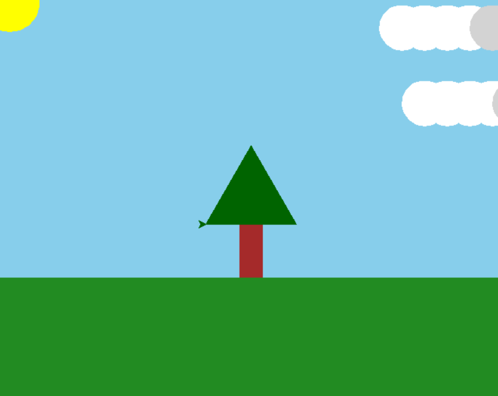

Created a vibrant landscape using Python Turtle, featuring a sun, clouds, and a central tree. Explored loops, conditionals, shapes, and color fills.

from turtle import *
speed(0)
# green grass as a cool lil background
bgcolor("ForestGreen")
# blue sky above
penup()
goto(-500, -100)
pendown()
color("SkyBlue")
begin_fill()
# cool lil variable
turn = 90
# loop
for i in range(2):
forward(1000)
left(turn)
forward(510)
left(turn)
end_fill()
# yellow sun
penup()
goto(-320, 225)
pendown()
color("Yellow")
begin_fill()
circle(40)
end_fill()
# clouds using conditionals for color
x = 200
penup()
for i in range(8):
if x > 290:
color("lightgray") # darker cloud
else:
color("white") # normal cloud
goto(x, 200)
pendown()
begin_fill()
circle(30)
end_fill()
penup()
x += 30
goto(x, 100)
pendown()
begin_fill()
circle(30)
end_fill()
penup()
z = -100
color("white")
for i in range(8):
goto(z, 300)
pendown()
begin_fill()
circle(30)
end_fill()
penup()
z += 35
# tree in the center
penup()
goto(-15, -100)
pendown()
color("Brown")
begin_fill()
for i in range(2):
forward(30)
left(90)
forward(70)
left(90)
end_fill()
# tree leaves
penup()
goto(-60, -30)
pendown()
color("darkgreen")
begin_fill()
for i in range(3):
forward(120)
left(120)
end_fill()
done()
done()